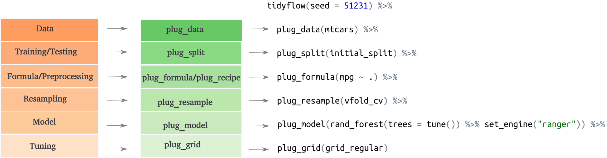

The workflow in machine learning is very standard and can be summarized in these steps:
Separate into training/testing
Feature engineering / Preprocessing
Cross validation
Tuning
Model definition
Fit model
Although some of these steps can be exchanged (feature engineering and preprocessing can be done before separating into training/testing), the process is somewhat fixed. For example, you cannot perform tuning before defining a cross-validation resample or evaluate a model without fitting it.
tidyflow takes advantage of this fixed order to create a simple and easy interface to the tidymodels ecosystem. tidyflow works by defining steps which are directly mapped to the workflow defined above:

Let’s work out a manual example.
Let’s construct a workflow that fits a linear model to mtcars but only on the training data:
library(tidymodels)
library(tidyflow)
tflow <-
mtcars %>%
tidyflow(seed = 52131) %>%
plug_formula(mpg ~ .) %>%
plug_split(initial_split) %>%
plug_model(linear_reg() %>% set_engine("lm"))
tflow
#> ══ Tidyflow ════════════════════════════════════════════════════════════════════
#> Data: 32 rows x 11 columns
#> Split: initial_split w/ default args
#> Formula: mpg ~ .
#> Resample: None
#> Grid: None
#> Model:
#> Linear Regression Model Specification (regression)
#>
#> Computational engine: lmThe output of tflow describes the current workflow definition. You might be wondering, what are these initial_split or linear_reg() expressions. tidyflow is built upon tidymodels so it works with the core functions of this ecosystem. initial_split is the function that separates the data into training/testing and linear_reg() is the model definition. With this definition, we can just fit the model:
res <- fit(tflow)
res
#> ══ Tidyflow [trained] ══════════════════════════════════════════════════════════
#> Data: 32 rows x 11 columns
#> Split: initial_split w/ default args
#> Formula: mpg ~ .
#> Resample: None
#> Grid: None
#> Model:
#> Linear Regression Model Specification (regression)
#>
#> Computational engine: lm
#>
#> ══ Results ═════════════════════════════════════════════════════════════════════
#>
#>
#> Fitted model:
#>
#> Call:
#> stats::lm(formula = ..y ~ ., data = data)
#>
#> Coefficients:
#>
#> ...
#> and 5 more lines.The result of fit is the same tflow but with a fitted model. You might see some of the lines of the output at the bottom of the printout. We can extract the model with pull_tflow_fit:
pull_tflow_fit(res)$fit
#>
#> Call:
#> stats::lm(formula = ..y ~ ., data = data)
#>
#> Coefficients:
#> (Intercept) cyl disp hp drat wt
#> -3.835e+01 8.429e-01 5.648e-03 6.885e-04 2.681e+00 -4.479e+00
#> qsec vs am gear carb
#> 3.047e+00 -4.109e+00 2.135e+00 1.200e+00 -3.165e-01Suppose that after looking at the results you want to go back and normalize all variables. You can reuse the entire tidyflow and just replace the formula with a recipe. Let’s add a preprocessing step where we normalize all variables:
res2 <-
tflow %>%
drop_formula() %>%
plug_recipe(~ recipe(mpg ~ ., data = .x) %>% step_scale(all_predictors())) %>%
fit()
pull_tflow_fit(res2)$fit
#>
#> Call:
#> stats::lm(formula = ..y ~ ., data = data)
#>
#> Coefficients:
#> (Intercept) cyl disp hp drat wt
#> -38.34680 1.44751 0.75908 0.05288 1.45206 -4.62467
#> qsec vs am gear carb
#> 5.32065 -2.09136 1.08653 0.88467 -0.56773tidyflow allows you to recycle the entire flow and drop/replace any parts that you want to. Why did we drop the formula before adding a recipe? Because tidyflow the ‘preprocessing’ step only accepts either a formula or a recipe. For simpler models, a formula might be enough, but if you want to add additional preprocessing step, the recipe can be handy. Let’s now add a cross-validation step and fit the model:
res3 <-
res2 %>%
plug_resample(vfold_cv, v = 10) %>%
fit()
pull_tflow_fit_tuning(res3)
#> # Resampling results
#> # 10-fold cross-validation
#> # A tibble: 10 x 4
#> splits id .metrics .notes
#> <list> <chr> <list> <list>
#> 1 <split [21/3]> Fold01 <tibble [2 × 3]> <tibble [0 × 1]>
#> 2 <split [21/3]> Fold02 <tibble [2 × 3]> <tibble [0 × 1]>
#> 3 <split [21/3]> Fold03 <tibble [2 × 3]> <tibble [0 × 1]>
#> 4 <split [21/3]> Fold04 <tibble [2 × 3]> <tibble [0 × 1]>
#> 5 <split [22/2]> Fold05 <tibble [2 × 3]> <tibble [0 × 1]>
#> 6 <split [22/2]> Fold06 <tibble [2 × 3]> <tibble [0 × 1]>
#> 7 <split [22/2]> Fold07 <tibble [2 × 3]> <tibble [0 × 1]>
#> 8 <split [22/2]> Fold08 <tibble [2 × 3]> <tibble [0 × 1]>
#> 9 <split [22/2]> Fold09 <tibble [2 × 3]> <tibble [0 × 1]>
#> 10 <split [22/2]> Fold10 <tibble [2 × 3]> <tibble [0 × 1]>When a resample has been specified, the final result of fit cannot be a single model as before because the model has been fitted 10 times. Instead it returns the resample object that is usually returned in tidymodels. In the same spirit of pull_tflow_fit, to extract the resample objects, we used pull_tflow_fit_tuning.
fit will always return either a model object or a tune/resamples object depending on the tidyflow specification. The rules for what to expect are simple: if there’s a resample specification or a resample specification with tuning parameters, the result will be a resample dataframe, otherwise it will be a model.
All tidymodels helpers to work with resample objects work just as well. For example:
res3 %>%
pull_tflow_fit_tuning() %>%
collect_metrics()
#> # A tibble: 2 x 5
#> .metric .estimator mean n std_err
#> <chr> <chr> <dbl> <int> <dbl>
#> 1 rmse standard 4.02 10 0.925
#> 2 rsq standard 0.965 10 0.0200Resampling is often used within a grid search context, where we want to find the most optimal value for predicting the data. plug_grid allows you to specify the type of grid that you want to use. For example, let’s replace our linear model with a regularized regression, find the most optimal penalty and mixture values using a regular spaced grid of values:
res4 <-
res3 %>%
plug_grid(grid_regular) %>%
replace_model(linear_reg(penalty = tune(), mixture = tune()) %>% set_engine("glmnet")) %>%
fit()
#> Loading required package: Matrix
#>
#> Attaching package: 'Matrix'
#> The following objects are masked from 'package:tidyr':
#>
#> expand, pack, unpack
#> Loaded glmnet 4.0-2
res4
#> ══ Tidyflow [tuned] ════════════════════════════════════════════════════════════
#> Data: 32 rows x 11 columns
#> Split: initial_split w/ default args
#> Recipe: available
#> Resample: vfold_cv w/ v = ~10
#> Grid: grid_regular w/ default args
#> Model:
#> Linear Regression Model Specification (regression)
#>
#> Main Arguments:
#> penalty = tune()
#> mixture = tune()
#>
#> Computational engine: glmnet
#>
#> ══ Results ═════════════════════════════════════════════════════════════════════
#>
#> Tuning results:
#>
#> # A tibble: 5 x 4
#> splits id .metrics .notes
#> <list> <chr> <list> <list>
#> 1 <split [21/3]> Fold01 <tibble [18 × 6]> <tibble [0 × 1]>
#> 2 <split [21/3]> Fold02 <tibble [18 × 6]> <tibble [0 × 1]>
#> 3 <split [21/3]> Fold03 <tibble [18 × 6]> <tibble [0 × 1]>
#> 4 <split [21/3]> Fold04 <tibble [18 × 6]> <tibble [0 × 1]>
#> 5 <split [22/2]> Fold05 <tibble [18 × 6]> <tibble [0 × 1]>
#>
#> ... and 5 more lines.Since we specified a cross-validating resampling with a grid search, the result will be a resample/tuning object. We can extract it with pull_tflow_fit_tuning and check which are the best tuning values:
res4 %>%
pull_tflow_fit_tuning() %>%
select_best(metric = "rmse")
#> # A tibble: 1 x 3
#> penalty mixture .config
#> <dbl> <dbl> <chr>
#> 1 1 0.525 Model6At this point, we need to finalize our tidyflow. This means that after figuring out which are the best tuning parameters, we want to train the model with these tuning values on the entire training data. complete_tflow figures out the best tuning values from the resamples object and train the model for you:
final_model <-
res4 %>%
complete_tflow(metric = "rmse")
final_model
#> ══ Tidyflow [trained] ══════════════════════════════════════════════════════════
#> Data: 32 rows x 11 columns
#> Split: initial_split w/ default args
#> Recipe: available
#> Resample: vfold_cv w/ v = ~10
#> Grid: grid_regular w/ default args
#> Model:
#> Linear Regression Model Specification (regression)
#>
#> Main Arguments:
#> penalty = 1
#> mixture = 0.525
#>
#> Computational engine: glmnet
#>
#> ══ Results ═════════════════════════════════════════════════════════════════════
#>
#> Tuning results:
#>
#> # A tibble: 5 x 4
#> splits id .metrics .notes
#> <list> <chr> <list> <list>
#> 1 <split [21/3]> Fold01 <tibble [18 × 6]> <tibble [0 × 1]>
#> 2 <split [21/3]> Fold02 <tibble [18 × 6]> <tibble [0 × 1]>
#> 3 <split [21/3]> Fold03 <tibble [18 × 6]> <tibble [0 × 1]>
#> 4 <split [21/3]> Fold04 <tibble [18 × 6]> <tibble [0 × 1]>
#> 5 <split [22/2]> Fold05 <tibble [18 × 6]> <tibble [0 × 1]>
#>
#> ... and 5 more lines.
#>
#>
#> Fitted model:
#>
#> Call: glmnet::glmnet(x = as.matrix(x), y = y, family = "gaussian", alpha = ~0.525)
#>
#> Df %Dev Lambda
#> 1 0 0.00 10.1100
#>
#> ...
#> and 86 more lines.One of the advantages of tidyflow is that it was built to work well within the machine learning workflow. To use this model to predict on the training data, you only have to call predict_training:
final_model %>%
predict_training()
#> # A tibble: 24 x 12
#> mpg cyl disp hp drat wt qsec vs am gear carb .pred
#> <dbl> <dbl> <dbl> <dbl> <dbl> <dbl> <dbl> <dbl> <dbl> <dbl> <dbl> <dbl>
#> 1 21 6 160 110 3.9 2.62 16.5 0 1 4 4 22.5
#> 2 21 6 160 110 3.9 2.88 17.0 0 1 4 4 22.1
#> 3 21.4 6 258 110 3.08 3.22 19.4 1 0 3 1 21.0
#> 4 18.7 8 360 175 3.15 3.44 17.0 0 0 3 2 17.8
#> 5 18.1 6 225 105 2.76 3.46 20.2 1 0 3 1 20.5
#> 6 14.3 8 360 245 3.21 3.57 15.8 0 0 3 4 15.5
#> 7 24.4 4 147. 62 3.69 3.19 20 1 0 4 2 22.9
#> 8 19.2 6 168. 123 3.92 3.44 18.3 1 0 4 4 19.5
#> 9 17.8 6 168. 123 3.92 3.44 18.9 1 0 4 4 19.6
#> 10 10.4 8 472 205 2.93 5.25 18.0 0 0 3 4 12.6
#> # … with 14 more rowsSimilarly, you can use predict_testing:
final_model %>%
predict_testing()
#> # A tibble: 8 x 12
#> mpg cyl disp hp drat wt qsec vs am gear carb .pred
#> <dbl> <dbl> <dbl> <dbl> <dbl> <dbl> <dbl> <dbl> <dbl> <dbl> <dbl> <dbl>
#> 1 22.8 4 108 93 3.85 2.32 18.6 1 1 4 1 26.0
#> 2 22.8 4 141. 95 3.92 3.15 22.9 1 0 4 2 22.7
#> 3 16.4 8 276. 180 3.07 4.07 17.4 0 0 3 3 16.2
#> 4 17.3 8 276. 180 3.07 3.73 17.6 0 0 3 3 16.9
#> 5 15.2 8 276. 180 3.07 3.78 18 0 0 3 3 16.8
#> 6 15.5 8 318 150 2.76 3.52 16.9 0 0 3 2 17.9
#> 7 15.2 8 304 150 3.15 3.44 17.3 0 0 3 2 18.3
#> 8 30.4 4 95.1 113 3.77 1.51 16.9 1 1 5 2 26.7These functions are useful because they’re safe: it’s not rare that you mistakenly predict on the testing data thinking it was the training data or that you forget to apply all of the preprocessing on the testing data. The predict_* functions take care of applying all of your preprocessing on either the training or testing data, freeing the user of having to remember all these different things.
Although this brief tutorial walked you through a tidyflow step by step, the richness of tidyflow is that it allows you to express this pipeline very quickly and to iterate as quickly as possible. For example, we can summarize the entire steps from before in a quick and readable expression:
tflow <-
mtcars %>%
tidyflow(seed = 52131) %>%
plug_recipe(~ recipe(mpg ~ ., data = .x) %>% step_scale(all_predictors())) %>%
plug_split(initial_split) %>%
plug_resample(vfold_cv) %>%
plug_grid(grid_regular) %>%
plug_model(linear_reg(penalty = tune(), mixture = tune()) %>% set_engine("glmnet"))
final_model <-
tflow %>%
fit() %>%
complete_tflow(metric = "rmse")
final_model %>%
predict_training()
#> # A tibble: 24 x 12
#> mpg cyl disp hp drat wt qsec vs am gear carb .pred
#> <dbl> <dbl> <dbl> <dbl> <dbl> <dbl> <dbl> <dbl> <dbl> <dbl> <dbl> <dbl>
#> 1 21 6 160 110 3.9 2.62 16.5 0 1 4 4 22.5
#> 2 21 6 160 110 3.9 2.88 17.0 0 1 4 4 22.1
#> 3 21.4 6 258 110 3.08 3.22 19.4 1 0 3 1 21.0
#> 4 18.7 8 360 175 3.15 3.44 17.0 0 0 3 2 17.8
#> 5 18.1 6 225 105 2.76 3.46 20.2 1 0 3 1 20.5
#> 6 14.3 8 360 245 3.21 3.57 15.8 0 0 3 4 15.5
#> 7 24.4 4 147. 62 3.69 3.19 20 1 0 4 2 22.9
#> 8 19.2 6 168. 123 3.92 3.44 18.3 1 0 4 4 19.5
#> 9 17.8 6 168. 123 3.92 3.44 18.9 1 0 4 4 19.6
#> 10 10.4 8 472 205 2.93 5.25 18.0 0 0 3 4 12.6
#> # … with 14 more rowstidyflow has several advantages:
You only specify the data once (no need to pass it to the recipe, the split, the cross-validation, the final fitting, prediction, etc…)
You provide a seed in the tidyflow and it makes sure the same tidyflow is always reproducible
No need to deal with separate objects (training data, cross-validated set, separate tuning grid, separate recipe)
No need to remember which fit function to use (fit_resample, tune_grid, fit): fit takes care of that and always returns either a model or a resamples/tune object
It’s very safe with respect to the training/testing dataset: everything is applied on the training data by default and predict_training and predict_testing make sure that you never have to do predictions manually, avoiding unexpected mistakes.
You can replace any step with ease. For example, you can build a complex workflow with a particular dataset and simply replace the data with a new data source and execute the tidyflow. In other settings, this means that you have to replace the data slot in the recipe, the split, the cross-validation, etc..
All plug_* functions and tidyflow() return a tidyflow object. However, what do they accept? The first argument is always a tidyflow and the remaining arguments add the steps used in the analysis. Below is a lookup table of what each accepts:
plug_split: a function to be applied to the data. This is assumed to be a function such as initial_split or similar functions from the rsample package.
plug_formula: the formula of the model definition. A tidyflow needs to specify either a formula or a recipe, but not both.
plug_recipe: a formula containing a recipe that will be applied to the training data. A tidyflow needs to specify either a formula or a recipe, but not both.
plug_resample: a function to be applied to the preprocessed data. This is assumed to be a function such as vfold_cv or similar functions from the rsample package.
plug_grid: a function to be applied to the tuning placeholders in the recipe or the data. This is assumed to be a function such as grid_regular or similar functions from the dials package.
plug_model: a model object from packages such as parsnip.
Despite these plug_* not having a single unified interface on which arguments they accept, we believe these plug_* functions are easy to remember as they can be mapped directly to the machine learning workflow. Any feedback on how to improve the interface or functionality is more than welcome. Please file an issue on Github here.